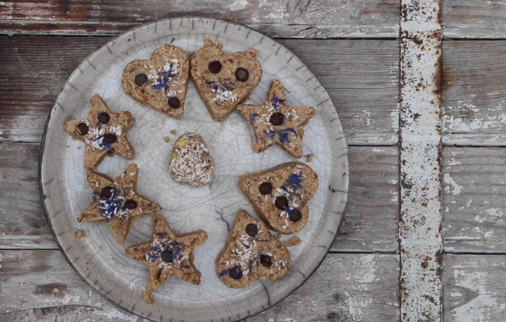

Les « Crukies » — cookies crus, gourmands & équilibrés
Des cookies crus, sans cuisson, riches en bons gras et en fibres — relevés de fleurs et plantes sauvages cueillies au fil des saisons. Gourmands, sains, et prêts en 15 minutes.
En images
Ingrédients
- 75 g flocons d'avoine
- 100 g poudre d'amandes
- 25 g noix
- 20 g purée de noisettes
- 75 g dattes Mazafati
- 35 g huile de coco
- 30 g pépites de chocolat
- 30 g copeaux de coco
Préparation
Préparer les ingrédients
Concassez les noix, réhydratez les dattes si nécessaire et faites fondre l'huile de coco.
Mélanger
Réunissez tous les ingrédients et travaillez jusqu'à obtenir une pâte homogène et compacte.
Former
Façonnez les crukies à l'emporte-pièce ou à la main. Décorez de fleurs sauvages.
Réfrigérer
Placez 2 h au réfrigérateur pour que les crukies se tiennent bien.
Conseils de cueillette
Fleurs de bleuets séchées, lamier, trèfle, pensées sauvages : toutes s'incorporent dans la pâte ou se posent en décoration. Cueillez loin des zones traitées (bords de route, cultures), de préférence le matin par temps sec. — Sabine Curci, naturopathe
Conservation
Variantes & astuces
- Version sans gluten — remplacez les flocons d'avoine par du sarrasin.
- Épices hivernales — cannelle, gingembre et muscade pour une note chaleureuse.
- Version détox — incorporez de l'ortie séchée en poudre.
- Gourmandise — trempez la base des crukies dans du chocolat noir fondu.
Vidéo de préparation
Posez votre question à l'auteur
Cultivez votre cuisine sauvage
Créez votre compte gratuit pour débloquer les variantes et la vidéo, ou rejoignez l'Atelier pour l'accompagnement complet.